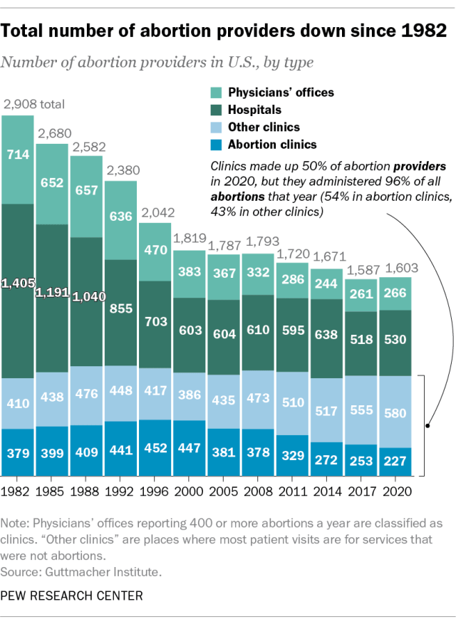
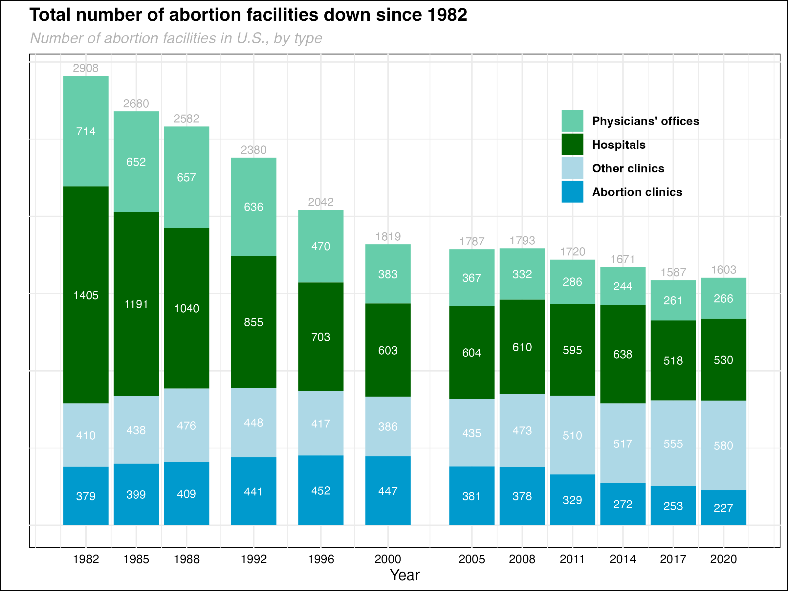

# Load the necessary library
library(ggplot2)
library(tidyverse)
library(here)
# Create the dataframe
data <- tibble(
Year = c(1982, 1985, 1988, 1992, 1996, 2000, 2005, 2008, 2011, 2014, 2017, 2020),
Total = c(2908, 2680, 2582, 2380, 2042, 1819, 1787, 1793, 1720, 1671, 1587, 1603),
`Physicians' offices` = c(714, 652, 657, 636, 470, 383, 367, 332, 286, 244, 261, 266),
Hospitals = c(1405, 1191, 1040, 855, 703, 603, 604, 610, 595, 638, 518, 530),
`Other clinics` = c(410, 438, 476, 448, 417, 386, 435, 473, 510, 517, 555, 580),
`Abortion clinics` = c(379, 399, 409, 441, 452, 447, 381, 378, 329, 272, 253, 227)
)
# Define the breaks and labels for the x-axis
x_breaks <- unique(data$Year)
# Reshape the data frame into long format using tidyr's pivot_longer function
melted_data <- data %>%
pivot_longer(cols = -Year, names_to = "Facility_Type", values_to = "Number_of_Facilities") %>%
filter(Facility_Type != "Total") # Remove "Total" from melted data
# Set the order of levels in Facility_Type
facility_order <- c("Physicians' offices", "Hospitals", "Other clinics", "Abortion clinics")
melted_data$Facility_Type <- factor(melted_data$Facility_Type, levels = facility_order)
# Calculate the cumulative sum of heights for each facility type
cumulative_heights <- melted_data %>%
group_by(Year) %>%
arrange(desc(Facility_Type)) %>%
mutate(cumulative_height = cumsum(Number_of_Facilities) - 0.5 * Number_of_Facilities) %>%
ungroup()
# Plot the data with the requested color scheme and white text on top
plot_pew <- ggplot() +
geom_bar(data = melted_data, aes(x = Year, y = Number_of_Facilities, fill = Facility_Type), stat = "identity") +
geom_text(data = cumulative_heights, aes(x = Year, y = cumulative_height, label = Number_of_Facilities), vjust = 0.5, color = "white", size = 3) +
geom_text(data = data, aes(x = Year, y = Total, label = Total), vjust = -0.5, color = "gray70", size = 3) + labs(title = expression(bold("Total number of abortion facilities down since 1982")),
subtitle = "Number of abortion facilities in U.S., by type",
x = "Year",
y = "",
fill = "") +
theme_minimal() +
theme(legend.position = c(0.8, 0.8), # Adjust legend position (top right corner)
legend.title = element_blank(), # Remove legend title
legend.text = element_text(face = "bold", color = "black"), # Set legend text color
axis.text.x = element_text(color = "black"),
axis.text.y = element_blank(), # Remove y-axis label
plot.title = element_text(face = "bold"),
plot.subtitle = element_text(face = "italic", color = "gray70"),
plot.background = element_rect(fill = "white"), # Set plot background to white
panel.background = element_rect(fill = "white")) + # Set panel background to white
scale_x_continuous(breaks = x_breaks, labels = x_breaks) +
scale_fill_manual(values = c("Physicians' offices" = "aquamarine3",
"Hospitals" = "darkgreen",
"Other clinics" = "lightblue",
"Abortion clinics" = "deepskyblue3"))
# Save the plot as a PNG file using the here command
ggsave(here("presentation-exercise", "presentation-exercise.png"), plot_pew, width = 8, height = 6, units = "in", dpi = 300)Presentation Exercise
Data source
I found this bar graph from the Pew Research Center from an article titled “What the data says about abortion in the U.S.” by Jeff Diamant and Beheer Mohamed. The article explores how both abortion provision and the number of abortion facilities have changed from the legalization of abortion with Roe v Wade in 1973 until 2020. All data came from the Guttmacher Institute and the CDC, although I was unable to find the original data for the graph I recreated below, so I manually input the numbers into a .csv file.
Original graph
Here you can see a copy of the original graph.
 This shows us that the number of abortion facilities has decreased since 1982. The graph also shows the number of facilities by type, and we can see that most abortions used to be performed in hospitals, but now they are mostly performed in clinics. One misleading aspect of this graph is that it states these are the number of “providers,” which implies individual physicians. This is incorrect. From looking at the Guttmacher website, we can see that these are the number of facilities. I have changed the wording in my reproduced graph to better represent the data.
Reproduced graph
Code
This was a long process for me, since I am new to creating graphics in R. First, I copied and pasted the data from my .csv file, which I created by hand into ChatGPT and asked it to create a dataframe using tidyverse. Then I asked how to reproduce these data into a bar graph using ggplot2.
From there, I had to go back-and-forth to learn how to modify the colors of the bar graph and put the numbers in white text on top of each corresponding color; how to change the location of the numbers so they were in the center of each color block (this took awhile, but the vjust command was important); how to make sure all years were showing on the x-axis; how to change the formatting of the table title and subtitle; how to change the location of the legend; how to remove the labels on the y-axis; how to include the total numbers stacked on top of the bar graph; how to fiddle with the fonts and colors; and how to save the graph as a .png file.
Here is my final code:
Graph

I was unable to include the informational text about the shift toward clinics, including the lines coming from the clinic bars in 2020. However, overall, I am pretty happy with my output. I know I need to work on removing the graph lines, and the colors really don’t look as nice as the original. Any suggestions are welcome!
Reproduced Table
Below is the code ChatGPT helped me with. I had a really hard time making the title bold and all the columns center aligned. Although, somehow, after much back-and-forth as well as going to the gt website, I succeeded. I also found looking at Taylor Glass’s website helpful.
# Load packages
library(gt)
library(dplyr)
library(gtsummary)
# Create the dataframe
data <- tibble(
Year = c(1982, 1985, 1988, 1992, 1996, 2000, 2005, 2008, 2011, 2014, 2017, 2020),
Total = c(2908, 2680, 2582, 2380, 2042, 1819, 1787, 1793, 1720, 1671, 1587, 1603),
`Physicians' offices` = c(714, 652, 657, 636, 470, 383, 367, 332, 286, 244, 261, 266),
Hospitals = c(1405, 1191, 1040, 855, 703, 603, 604, 610, 595, 638, 518, 530),
`Other clinics` = c(410, 438, 476, 448, 417, 386, 435, 473, 510, 517, 555, 580),
`Abortion clinics` = c(379, 399, 409, 441, 452, 447, 381, 378, 329, 272, 253, 227)
)
# Create table
table_pew <- data %>%
gt() %>%
cols_align(align = "center") %>%
tab_spanner(
label = md("**Facilities**"),
columns = c(Year, Total, `Physicians' offices`, Hospitals, `Other clinics`, `Abortion clinics`)
) %>%
tab_header(
title = "Number of Abortion Facilities in U.S., by Type, 1982-2020"
)
table_pew| Number of Abortion Facilities in U.S., by Type, 1982-2020 | |||||
|---|---|---|---|---|---|
| Facilities | |||||
| Year | Total | Physicians' offices | Hospitals | Other clinics | Abortion clinics |
| 1982 | 2908 | 714 | 1405 | 410 | 379 |
| 1985 | 2680 | 652 | 1191 | 438 | 399 |
| 1988 | 2582 | 657 | 1040 | 476 | 409 |
| 1992 | 2380 | 636 | 855 | 448 | 441 |
| 1996 | 2042 | 470 | 703 | 417 | 452 |
| 2000 | 1819 | 383 | 603 | 386 | 447 |
| 2005 | 1787 | 367 | 604 | 435 | 381 |
| 2008 | 1793 | 332 | 610 | 473 | 378 |
| 2011 | 1720 | 286 | 595 | 510 | 329 |
| 2014 | 1671 | 244 | 638 | 517 | 272 |
| 2017 | 1587 | 261 | 518 | 555 | 253 |
| 2020 | 1603 | 266 | 530 | 580 | 227 |